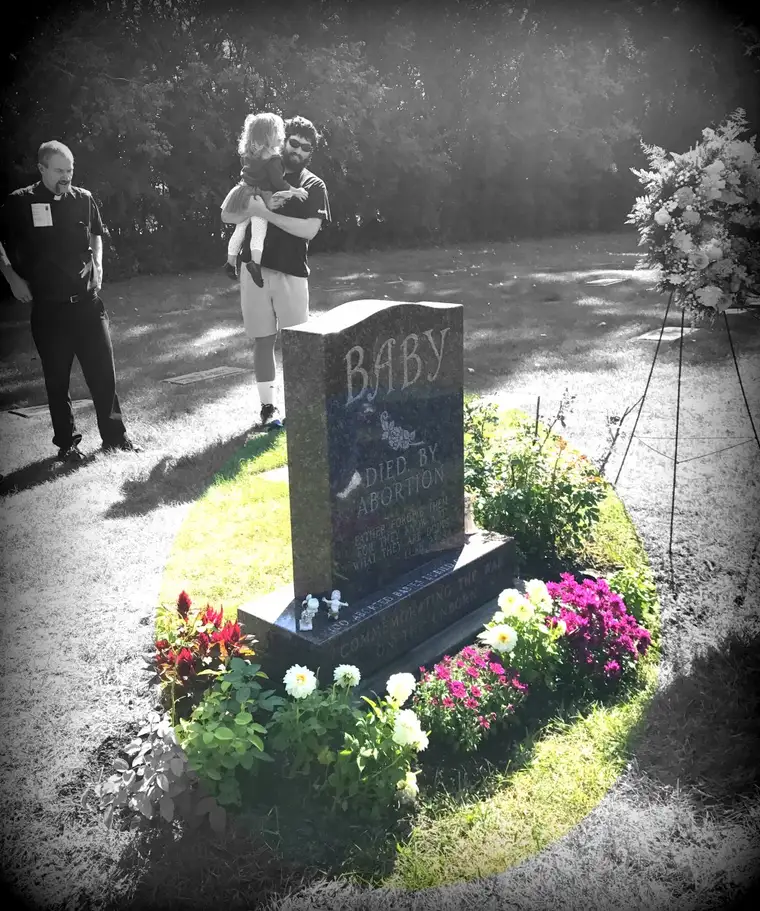

Last September, my friend Ann and I joined a group of others at Holy Cross Cemetery in North Fargo for the 4th Annual National Day of Remembrance for Aborted Children.At that event, Susan Richard of the Sts. Anne and Joachim Respect Life Committee reminded us that the 100 babies buried at the designated gravesite there were found in a dumping ground in Illinois and, later, tenderly transported back to their home state for burial.
“These children reached their eternal home early,” she noted. “They would have been 28 years old today.”
Thinking of these babies at the ages they would have been, had they been allowed to live, put things into focus for me rather dramatically. Suddenly, I wasn’t at the grounds of a meaningless tomb, but the gravesite of real souls whom God had in mind for something incredible.
Recognition of the efforts that had been taken to bring them back to North Dakota touched me deeply. Obviously, there was an expense involved in doing so, yet someone felt these little people were worthy.
And now, 29 years later, they are before us again as a reminder. Though this year’s event – the 5th annual of its kind, part of a national remembrance – is already past, those who missed it might want to consider coming next year, since it’s an annual observance.
At last year’s gathering, I was prompted to pause to consider those wee ones’ unrealized futures. Would some have been parents themselves? Very likely. It hurt to think that not only have we lost out on them, but their offspring as well. Whole family lines halt permanently when abortion happens. It’s not just about that one life.
We’ve come so far technologically, taken so many leaps to advance our world, and yet in all our intelligence, we have yet to be creative and caring enough to come up with a way other than death to deal with a life that is announced at an “inopportune” time.
I don’t want to minimize how hard it is for those unprepared parents who receive news of a life in motion before they’re emotionally ready. Each life’s worth brings with it similarly weighty consequences.
And yet, each also holds unfathomable potential, which we often fail to consider. Instead, in our panic and lack of trust in God, we think only short term, and kill what is beautiful and pure.
Praying and singing for those babies that day, and watching them being blessed with holy water by the Reverend Kyle Metzger, brought them each to life in my heart. I imagined them as young adults, living and breathing, making mistakes along the way but producing untold blessings through the very act of trying.
As their faces appeared before me in my imagination, one by one, my heart lurched.
Fr. Metzger reminded us then that “What God creates he never ‘un-creates,’ he never destroys,” and that our value comes not from what we do or accomplish in this life, but simply by having been made in God’s image and likeness.
Richard added fittingly, “Thank God there is still controversy over abortion,” noting that the day the controversy subsides while abortion still exists, we’ve lost.
It’s been a year since that beautiful day at the cemetery. But I really think that is the day this column began to percolate in my heart. As those children became real to me, so did a nagging of conscience that we need to continue presenting them to the world, to remind ourselves, and others, that their lives deserve honor.
Their time on earth may have been cut short, but they are still with us, because they are eternal.
Some Sidewalk Stories unfold on Wednesdays, when our local abortion facility is open for business. But others happen offsite, and in the quiet moments of our hearts at events such as the remembrance gathering.
Though this year’s memorial is already a memory, many pro-life events are happening elsewhere. Seek them out and invite a friend to join you. Even if you cannot pray on the sidewalk, other opportunities in our diocese to honor these wee ones abound.
Finally, continue to pray unceasingly that we might all recognize life for what it is.
Saint Michael The Archangel, defend us in battle, for the battle is real. And we can only win it if we’re aware it’s taking place.
[Note: I write about my experiences on the sidewalk Downtown Fargo on Wednesday, the day abortions happen at our state’s only abortion facility, for New Earth magazine — the official news publication of the Fargo Diocese. I hope you find “Sidewalk Stories” helpful in understanding the truth about abortion and how it plays out tragically each week here in Fargo, N.D. The preceding ran in New Earth’s August-September 2017 issue.]